Rows: 9985 Columns: 4
── Column specification ────────────────────────────────────────────────────────
Delimiter: ","
dbl (4): age, edu, female, use
ℹ Use `spec()` to retrieve the full column specification for this data.
ℹ Specify the column types or set `show_col_types = FALSE` to quiet this message.40 Creating Tables with R and Microsoft Word
At this point, you should all know that it is generally a bad idea to submit raw R output as part of a report, presentation, or publication. You should also understand when it is most appropriate to use tables, as opposed to charts and graphs, to present your results. If not, please stop here and read Chapter 7 of Successful Scientific Writing, which discusses the “why” behind much of what we will show you “how” to do in this chapter.1
R for Epidemiology is predominantly a book about using R to manage, visualize, and analyze data in ways that are common in the field of epidemiology. However, in most modern work/research environments it is difficult to escape the requirement to share your results in a Microsoft Word document. And often, because we are dealing with data, those results include tables of some sort. However, not all tables communicate your results equally well. In this chapter, we will walk you through the process of starting with some results you calculated in R and ending with a nicely formatted table in Microsoft Word. Specifically, we are going to create a Table 1.
40.1 Table 1
In epidemiology, medicine, and other disciplines, “Table 1” has a special meaning. Yes, it’s the first table shown to the reader of your article, report, or presentation, but the special meaning goes beyond that. In many disciplines, including epidemiology, when you speak to a colleague about their “Table 1” it is understood that you are speaking about a table that describes (statistically) the relevant characteristics of the sample being studied. Often, but not always, the sample being studied is made up of people, and the relevant descriptive characteristics about those people include sociodemographic and/or general health information. Therefore, it is important that you don’t label any of your tables as “Table 1” arbitrarily. Unless you have a really good reason to do otherwise, your Table 1 should always be a descriptive overview of your sample.
Here is a list of other traits that should consider when creating your Table 1:
All other formatting best practices that apply to scientific tables in general. This includes formatting requirements specific to wherever you are submitting your table (e.g., formatting requirements in the American Journal of Public Health).
Table 1 is often, but not always, stratified into subgroups (i.e., descriptive results are presented separately for each subgroup of the study sample in a way that lends itself to between-group comparisons).
When Table 1 is stratified into subgroups, the variable that contains the subgroups is typically the primary exposure/predictor of interest in your study.
40.2 Opioid drug use
As a motivating example, let’s say that we are working at the North Texas Regional Health Department and have been asked to create a report about drug use in our region. Our stakeholders are particularly interested in opioid drug use. To create this report, we will analyze data from a sample of 9,985 adults who were asked about their use of drugs. One of the first analyses that we did was a descriptive comparison of the sociodemographic characteristics of 3 subgroups of people in our data. We will use these analyses to create our Table 1.
You can view/download the data by clicking here
var cat n n_total percent se t_crit lcl
1 use_f Non-users 8315 9985 83.274912 0.3734986 1.960202 82.52992
2 use_f Use other drugs 1532 9985 15.343015 0.3606903 1.960202 14.64925
3 use_f Use opioid drugs 138 9985 1.382073 0.1168399 1.960202 1.17080
ucl
1 83.994296
2 16.063453
3 1.630841 var use n mean sd t_crit sem lcl ucl
1 age 0 8315 36.80173 9.997545 1.960249 0.10963828 36.58681 37.01665
2 age 1 1532 21.98362 2.979511 1.961515 0.07612296 21.83431 22.13294
3 age 2 138 17.34740 3.081049 1.977431 0.26227634 16.82877 17.86603 row_var row_cat col_var col_cat n n_row n_total percent_total se_total
1 use 0 female_f No 3077 8315 9985 30.8162243 0.46210382
2 use 0 female_f Yes 5238 8315 9985 52.4586880 0.49979512
3 use 1 female_f No 796 1532 9985 7.9719579 0.27107552
4 use 1 female_f Yes 736 1532 9985 7.3710566 0.26150858
5 use 2 female_f No 91 138 9985 0.9113671 0.09510564
6 use 2 female_f Yes 47 138 9985 0.4707061 0.06850118
t_crit_total lcl_total ucl_total percent_row se_row t_crit_row lcl_row
1 1.960202 29.9178650 31.7293461 37.00541 0.5295162 1.960202 35.97359
2 1.960202 51.4781679 53.4373162 62.99459 0.5295162 1.960202 61.95076
3 1.960202 7.4565108 8.5197562 51.95822 1.2768770 1.960202 49.45247
4 1.960202 6.8745702 7.9003577 48.04178 1.2768770 1.960202 45.54583
5 1.960202 0.7426382 1.1179996 65.94203 4.0488366 1.960202 57.62323
6 1.960202 0.3538217 0.6259604 34.05797 4.0488366 1.960202 26.61786
ucl_row
1 38.04924
2 64.02641
3 54.45417
4 50.54753
5 73.38214
6 42.37677 row_var row_cat col_var col_cat n n_row n_total
1 use 0 edu_f Less than high school 3908 8315 9985
2 use 0 edu_f High school 2494 8315 9985
3 use 0 edu_f Some college 915 8315 9985
4 use 0 edu_f College graduate 998 8315 9985
5 use 1 edu_f Less than high school 322 1532 9985
6 use 1 edu_f High school 567 1532 9985
7 use 1 edu_f Some college 321 1532 9985
8 use 1 edu_f College graduate 322 1532 9985
9 use 2 edu_f Less than high school 36 138 9985
10 use 2 edu_f High school 36 138 9985
11 use 2 edu_f Some college 40 138 9985
12 use 2 edu_f College graduate 26 138 9985
percent_total se_total t_crit_total lcl_total ucl_total percent_row
1 39.1387081 0.48845160 1.960202 38.1855341 40.1002400 46.99940
2 24.9774662 0.43322925 1.960202 24.1379137 25.8362747 29.99399
3 9.1637456 0.28874458 1.960202 8.6132458 9.7456775 11.00421
4 9.9949925 0.30017346 1.960202 9.4217947 10.5989817 12.00241
5 3.2248373 0.17680053 1.960202 2.8957068 3.5899942 21.01828
6 5.6785178 0.23161705 1.960202 5.2411937 6.1499638 37.01044
7 3.2148222 0.17653492 1.960202 2.8862151 3.5794637 20.95300
8 3.2248373 0.17680053 1.960202 2.8957068 3.5899942 21.01828
9 0.3605408 0.05998472 1.960202 0.2601621 0.4994549 26.08696
10 0.3605408 0.05998472 1.960202 0.2601621 0.4994549 26.08696
11 0.4006009 0.06321673 1.960202 0.2939655 0.5457064 28.98551
12 0.2603906 0.05100282 1.960202 0.1773397 0.3821865 18.84058
se_row t_crit_row lcl_row ucl_row
1 0.5473707 1.960202 45.92799 48.07358
2 0.5025506 1.960202 29.01822 30.98824
3 0.3432094 1.960202 10.34925 11.69521
4 0.3564220 1.960202 11.32112 12.71881
5 1.0412961 1.960202 19.04975 23.13209
6 1.2339820 1.960202 34.62587 39.46012
7 1.0401075 1.960202 18.98696 23.06466
8 1.0412961 1.960202 19.04975 23.13209
9 3.7515606 1.960202 19.42163 34.07250
10 3.7515606 1.960202 19.42163 34.07250
11 3.8761776 1.960202 22.00774 37.12261
12 3.3408449 1.960202 13.13952 26.26721Above, we have the results of several different descriptive analyses we did in R. Remember that we never want to present raw R output. Perhaps you’ve already thought to yourselves, “wow, these results are really overwhelming. We’re not sure what we’re even looking at.” Well, that’s exactly how many of the people in your audience will feel as well. In its current form, this information is really hard for us to process. We want to take some of the information from the output above and use it to create a Table 1 in Word that is much easier to read.
Specifically, we want our final Table 1 to look like this:
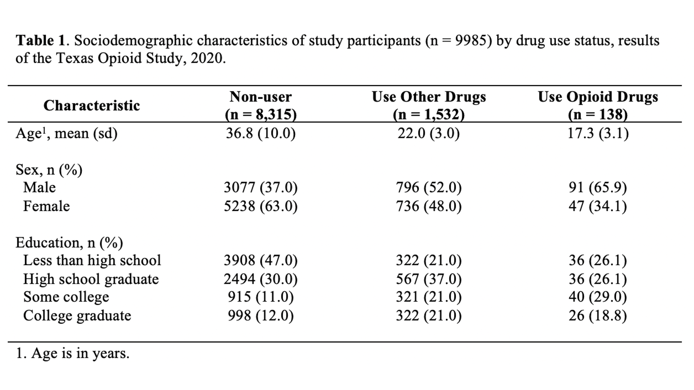
You may also click here to view/download the Word file that contains Table 1.
Now that you’ve seen the end result, let’s learn how to make this Table 1 together, step-by-step. Go ahead and open Microsoft Word now if you want to follow along.
40.3 Table columns
The first thing we typically do is figure out how many columns and rows our table will need. This is generally pretty straightforward; although, there are exceptions. For a basic Table 1 like the one we are creating above we need the following columns:
One column for our row headers (i.e., the names and categories of the variables we are presenting in our analysis).
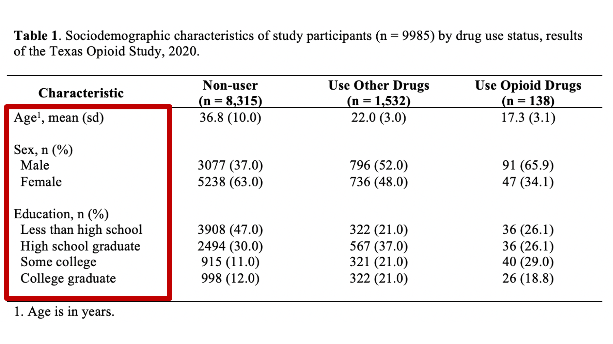
One column for each subgroup that we will be describing in our table. In this case, there are 3 subgroups so we will need 3 additional columns.
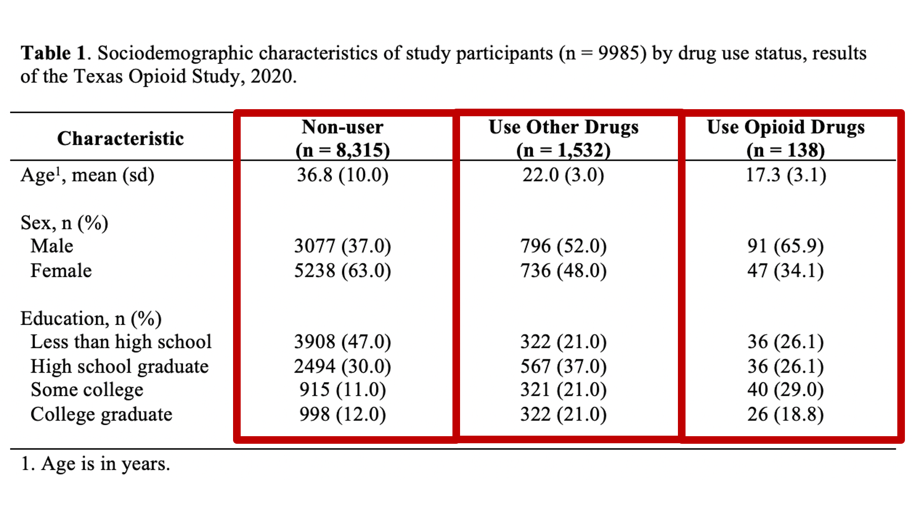
So, we will need 4 total columns.
Note
If you are going to describe the entire sample overall without stratifying it into subgroups then you would simply have 2 columns. One for the row headers and one for the values.
40.4 Table rows
Next, we need to figure out how many rows our table will need. This is also pretty straightforward. Generally, we will need the following rows:
One row for the title. Some people write their table titles outside (above or below) the actual table. We like to include the title directly in the top row of the table. That way, it moves with the table if the table gets moved around.
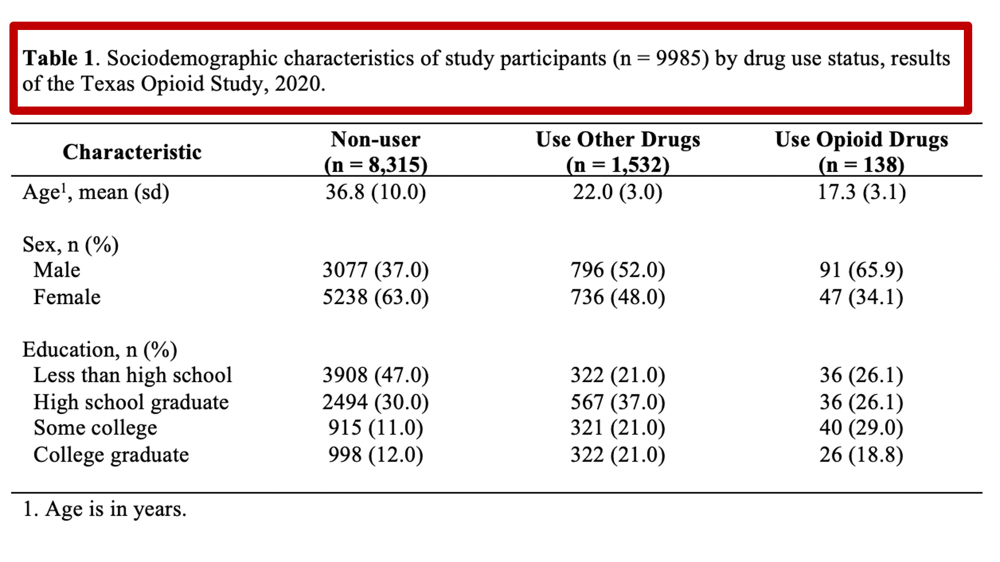
One row for the column headers. The column headers generally include a label like “Characteristic” for the row headers column and a descriptive label for each subgroup we are describing in our table.
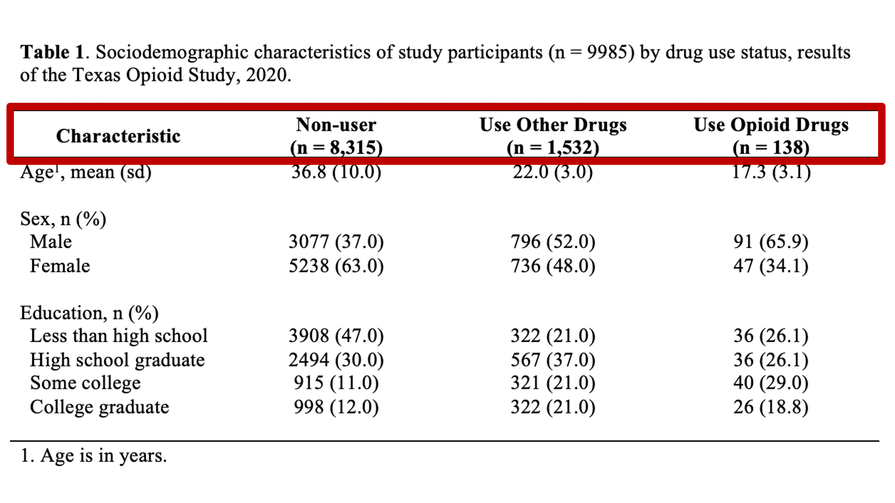
One row for each variable we will analyze in our analysis. In this example, we have three – age, sex, and education. NOTE that we do NOT need a separate row for each category of each variable.
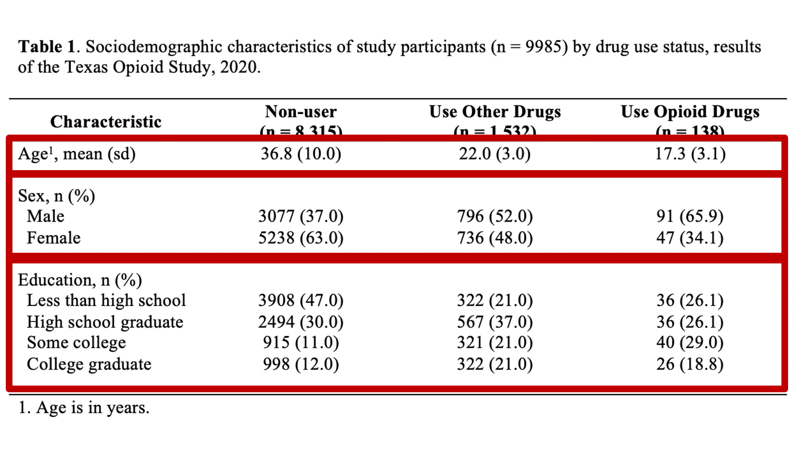
One row for the footer.
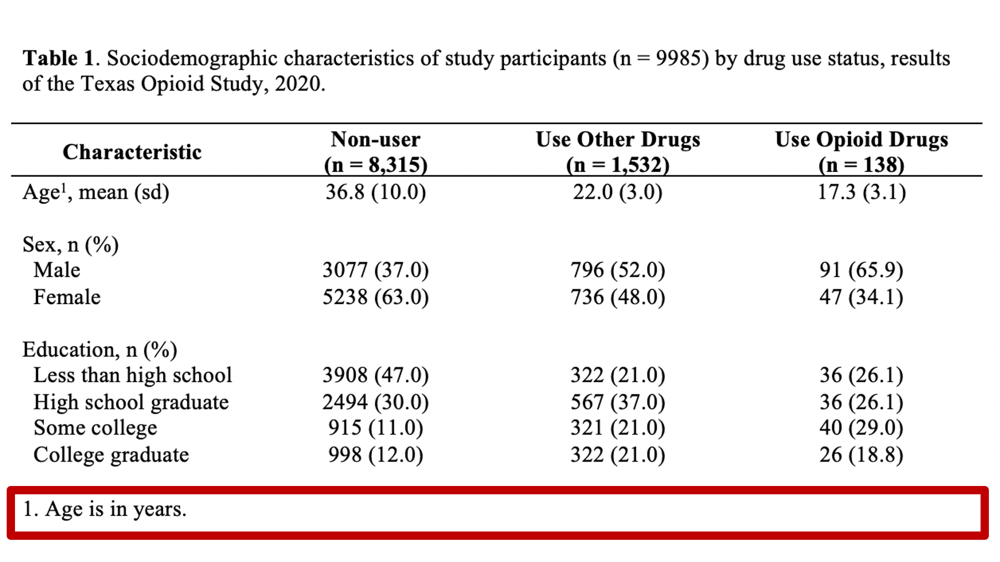
So, we will need 6 total rows.
40.5 Make the table skeleton
Now that we know we need to create a table with 4 columns and 6 rows, let’s go ahead and do that in Microsoft Word. We do so by clicking the Insert tab in the ribbon above our document. Then, we click the Table button and select the number of columns and rows we want.
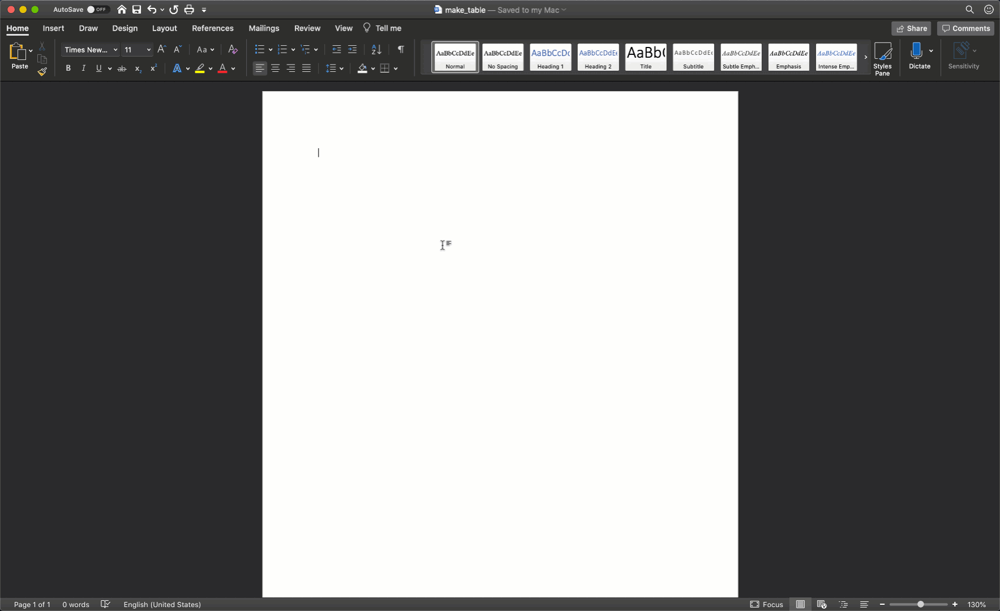
40.6 Fill in column headers
Now we have our table skeleton. The next thing we would typically do is fill in the column headers. Remember that our column headers look like this:
Here are a couple of suggestions for filling in your column headers:
Put your column headers in the second row of the empty table shell. The title will eventually go into the first row. We don’t add the title right away because it is typically long and will distort the table’s dimensions. Later, we will see how to horizontally merge table cells to remove this distortion, but we don’t want to do that now. Right now, we want to leave all the cells unmerged so that we can easily resize our columns.
The first column header is generally a label for our row headers. Because the rows are typically characteristics of our sample, we almost always use the word “characteristic” here. If you come up with a better word, please feel free to use it.
The rest of the column headers are generally devoted to the subgroups we are describing.
The subgroups should be ordered in a way that is meaningful. For example, by level of severity or chronological order. Typically, ordering in alphabetical order isn’t that meaningful.
The subgroup labels should be informative and meaningful, but also succinct. This can sometimes be a challenge.
we have seen terms like “Value”, “All”, and “Full Sample” used when Table 1 was describing the entire sample overall rather than describing the sample by subgroups.
40.6.1 Group sample sizes
You should always include the group sample size in the column header. They should typically be in the format “(n = sample size)” and typed in the same cell as the label, but below the label (i.e., hit the return key). The group sample sizes can often provide important context to the statistics listed below in the table, and clue the reader into missing data issues.
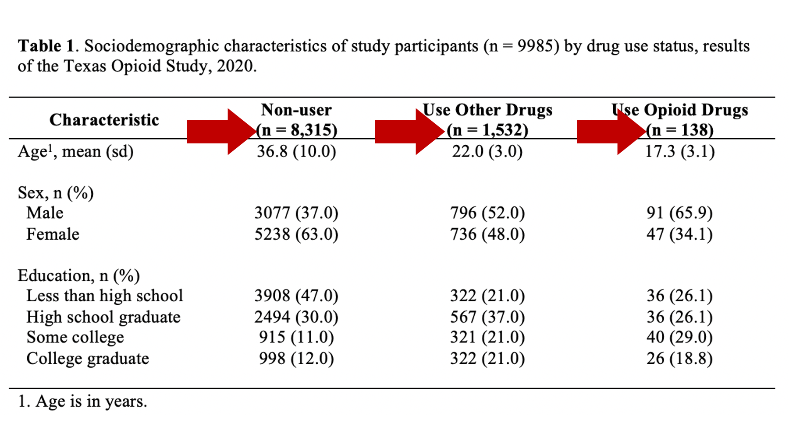
40.6.2 Formatting column headers
we generally bold our column headers, horizontally center them, and vertically align them to the bottom of the row.
At this point, your table should look like this in Microsoft Word:
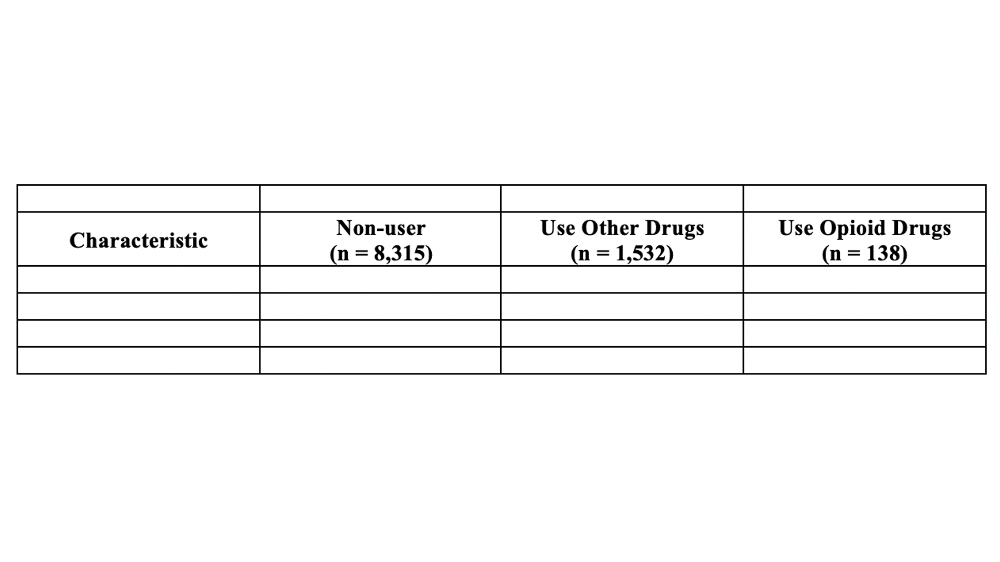
40.7 Fill in row headers
The next thing we would typically do is fill in the row headers. Remember, that our row headers look like this:
Here are a couple of suggestions for filling in your row headers:
The variables should be organized in a way that is meaningful. In our example, we have only 3 sociodemographic variables. However, if we also had some variables about health status and some variables related to criminal history, then we would almost certainly want the variables that fit into each of these categories to be vertically arranged next to each other.
Like the column headers, the row headers should be informative and meaningful, but also succinct. Again, this can sometimes be a challenge. In our example, we use “Age”, “Sex”, and “Education”. Something like “Highest level of formal education completed” would have also been informative and meaningful, but not succinct. Something like “Question 6” is succinct, but isn’t informative or meaningful at all.
40.7.1 Label statistics
You should always tell the reader what kind of statistics they are looking at – don’t assume that they know. For example, the highlighted numbers in figure @ref(fig:what-stats) are 36.8 and 10. What is 36.8? The mean, the median? The percentage of people who had a non-missing value for age? What is 10? The sample size? The standard error of the mean? An odds ratio? You know that 36.8 is a mean and 10 is the standard deviation because we identified what they were in the row header. @ref(fig:identify-stats) When you label the statistics in the row headers as we’ve done in our example, they should take the format you see in figure @ref(fig:identify-stats). That is, the variable name, followed by a comma, followed by the statistics used in that row. Also notice the use of parentheses. We used parentheses around the letters “sd” (for standard deviation) because the numbers inside the parentheses in that row are standard deviations. So, the label used to identify the statistics should give the reader a blueprint for interpreting the statistics that matches the format of the statistics themselves.
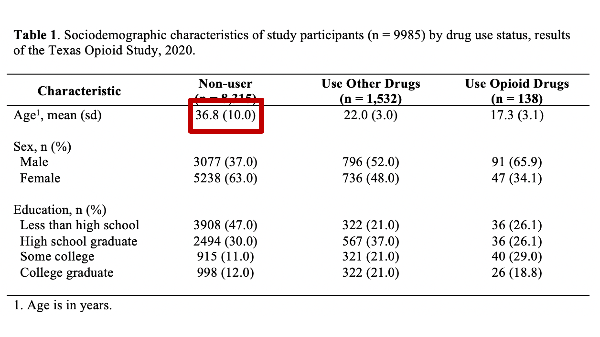
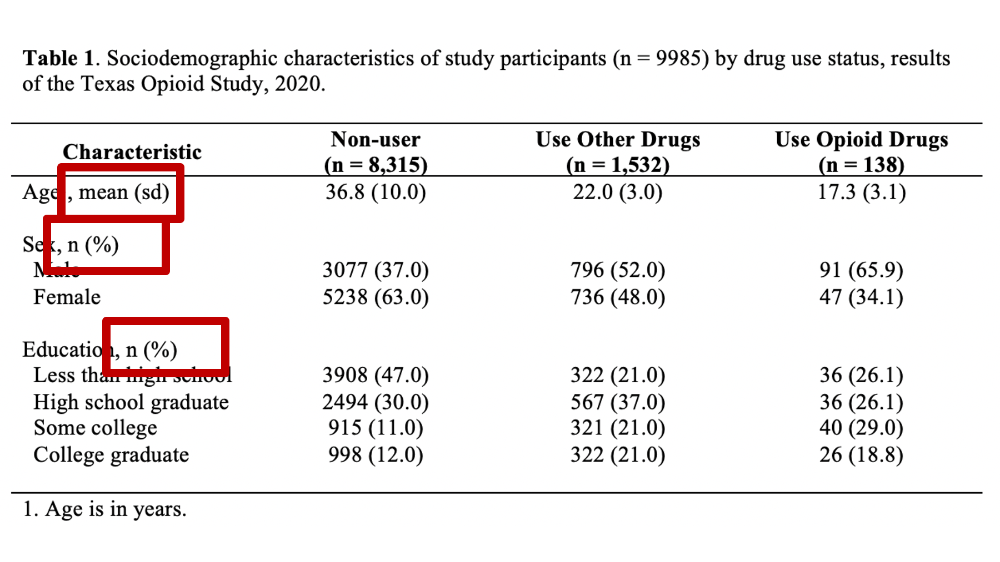
The statistics can, and sometimes are, labeled in the column header instead of the row header. This can sometimes be a great idea. However, it can also be a source of confusion. For example, in the figure below, the column headers include labels (i.e., n (%)) for the statistics below. However, not all the statistics below are counts (n) and percentages!
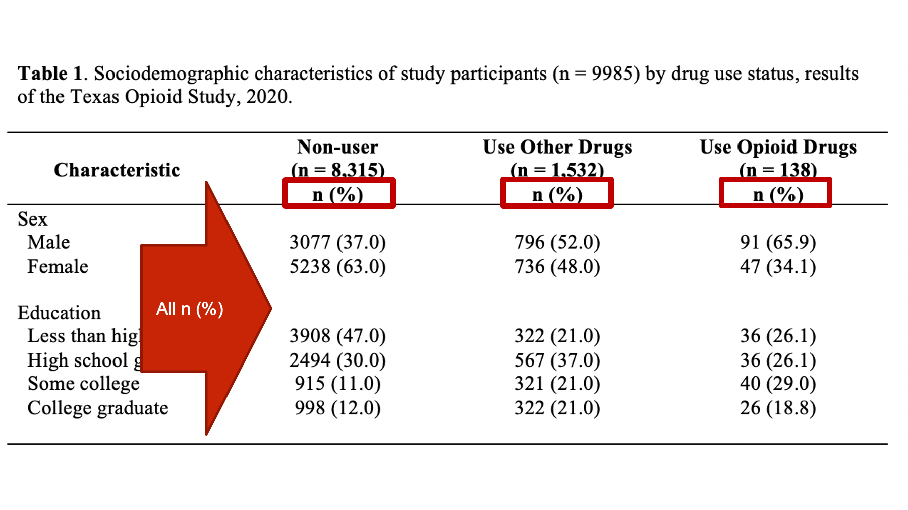
Even though the Age variable has its own separate statistics label in the row header, this is still generally a really bad idea! Therefore, we highly recommend only labeling your statistics in the column header when those labels are accurate for every value in the column. For example:
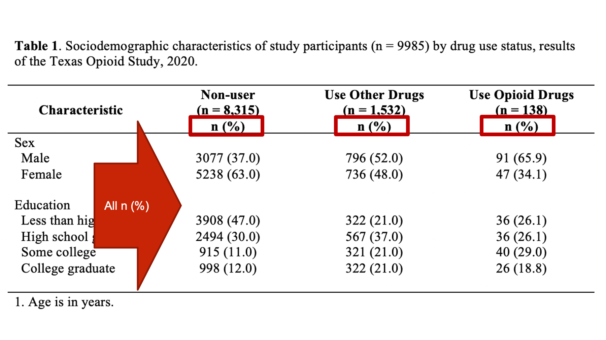
40.7.2 Formatting row headers
Whenever possible, make sure that variable name and statistic identifier fit on one line (i.e., they don’t carry over into the line below).
Always type the category labels for categorical variables in the same cell as the variable name. However, each category should have its own line (i.e., hit the return key).
Whenever possible, make sure that each category label fits on one line (i.e., it doesn’t carry over into the line below).
Indent each category label two spaces to the left of the variable name.
Hit the return key once after the last category for each categorical variable. This creates a blank line that adds vertical separation between row headers and makes them easier to read.
At this point, your table should look like this in Microsoft Word:
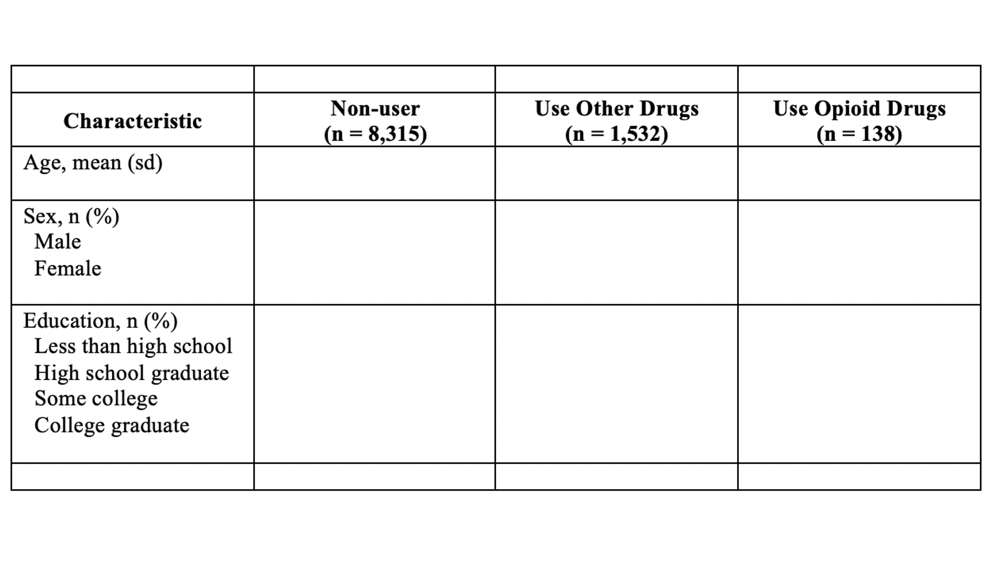
40.8 Fill in data values
So, we have some statistics visible to us on the screen in RStudio. Somehow, we have to get those numbers over to our table in Microsoft Word. There are many different ways we can do this. We’re going to compare a few of those ways here.
40.8.1 Manually type values
One option is to manually type the numbers into your word document.
👍 If you are in a hurry, or if you just need to update a small handful of statistics in your table, then this option is super straightforward. However, there are at least two big problems with this method.
👎 First, it is extremely error prone. Most people are very likely to type a wrong number or misplace a decimal here and there when they manually type statistics into their Word tables.
👎 Second, it isn’t very scalable. What if you need to make very large tables with lots and lots of numbers? What if you update your data set and need to change every number in your Word table? This is not fun to do manually.
40.8.2 Copy and paste values
Another option is to copy and paste values from RStudio into Word. This option is similar to above, but instead of typing each value into your Word table, you highlight and copy the value in RStudio and paste it into Word.
👍 If you are in a hurry, or if you just need to update a small handful of statistics in your table, then this option is also pretty straightforward. However, there are still issues associated with this method.
👎 First, it is still somewhat error prone. It’s true that the numbers and decimal placements should always be correct when you copy and paste; however, you may be surprised by how often many people accidentally paste the values into the wrong place or in the wrong order.
👎 Second, I’ve noticed that there are often weird formatting things that happen when we copy from RStudio and paste into Word. They are usually pretty easy to fix, but this is still a small bit of extra hassle.
👎 Third, it isn’t very scalable. Again, if we need to make very large tables with lots and lots of numbers or update our data set and need to change every number in your Word table, this method is time-consuming and tedious.
40.8.3 Knit a Word document
So far, we have only used the HTML Notebook output type for our R markdown files. However, it’s actually very easy have RStudio create a Word document from you R markdown files. We don’t have all the R knowledge we need to fully implement this method yet, so we don’t want to confuse you by going into the details here. But, we do want to mention that it is possible.
👍 The main advantages of this method are that it is much less error prone and much more scalable than manually typing or copying and pasting values.
👎 The main disadvantages are that it requires more work on the front end and still requires you to open Microsoft Word a do a good deal of formatting of the table(s).
40.8.4 flextable and officer
A final option we’ll mention is to create your table with the flextable and officer packages. This is our favorite option, but it is also definitely the most complicated. Again, we’re not going to go into the details here because they would likely just be confusing for most readers.
👍 This method essentially overcomes all of the previous methods’ limitations. It is the least error prone, it is extremely scalable, and it allows us to do basically all the formatting in R. With a push of a button we have a complete, perfectly formatted table output to a Word document. If we update our data, we just push the button again and we have a new perfectly formatted table.
👎 The primary downside is that this method requires you to invest some time in learning these packages, and requires the greatest amount of writing code up front. If you just need to create a single small table that you will never update, this method is probably not worth the effort. However, if you absolutely need to make sure that your table has no errors, or if you will need to update your table on a regular basis, then this method is definitely worth learning.
40.8.5 Significant digits
No matter which of the methods above you choose, you will almost never want to give your reader the level of precision that R will give you. For example, the first row of the R results below indicates that 83.274912% of our sample reported that they don’t use drugs.
var cat n n_total percent se t_crit lcl
1 use_f Non-users 8315 9985 83.274912 0.3734986 1.960202 82.52992
2 use_f Use other drugs 1532 9985 15.343015 0.3606903 1.960202 14.64925
3 use_f Use opioid drugs 138 9985 1.382073 0.1168399 1.960202 1.17080
ucl
1 83.994296
2 16.063453
3 1.630841Notice the level of precision there. R gives us the percentage out to 6 decimal places. If you fill your table with numbers like this, it will be much harder for your readers to digest your table and make comparisons between groups. It’s just the way our brains work. So, the logical next question is, “how many decimal places should we report?” Unfortunately, this is another one of those times that we have to give you an answer that may be a little unsatisfying. It is true that there are rules for significant figures (significant digits); however, the rules are not always helpful to students in my experience. Therefore, we’re going to share with you a few things we try to consider when deciding how many digits to present.
we don’t recall ever presenting a level of precision greater than 3 decimal places in the research we’ve been involved with. If you are working in physics or genetics and measuring really tiny things it may be totally valid to report 6, 8, or 10 digits to the right of the decimal. But, in epidemiology – a population science – this is rarely, if ever, useful.
What is the overall message we are trying to communicate? That is the point of the table, right? We’re trying to clearly and honestly communicate information to our readers. In general, the simpler the numbers are to read and compare, the clearer the communication. So, we tend to err on the side of simplifying as much as possible. For example, in the R results below, we could say that 83.274912% of our sample reported that they don’t use drugs, 15.343015% reported that they use drugs other than opioids, and 1.382073% reported that they use opioid drugs. Is saying it that way really more useful than saying that “83% of our sample reported that they don’t use drugs, 15% reported that they use drugs other than opioids, and 1% reported that they use opioid drugs”? Are we missing any actionable information by rounding our percentages to the nearest integer here? Are our overall conclusions about drug use any different? No, probably not. And, the rounded percentages are much easier to read, compare, and remember.
Be consistent – especially within a single table. We have experienced some rare occasions where it made sense to round one variable to 1 decimal place and another variable to 3 decimal places in the same table. But, circumstances like this are definitely the exception. Generally speaking, if you round one variable to 1 decimal place then you want to round them all to one decimal place.
Like all other calculations we’ve done in this book, we suggest you let R do the heavy lifting when it comes to rounding. In other words, have R round the values for you before you move them to Word. R is much less likely to make a rounding error than you are! You may recall that we learned how to round in the chapter on numerical descriptions of categorical variables.
40.8.6 Formatting data values
Now that we have our appropriately rounded values in our table, we just need to do a little formatting before we move on.
First, make sure to fix any fonts, font sizes, and/or background colors that may have been changed if you copied and pasted the values from RStudio into Word.
Second, make sure the values line up horizontally with the correct variable names and category labels.
Third, we tend to horizontally center all our values in their columns.
At this point, your table should look like this in Microsoft Word:
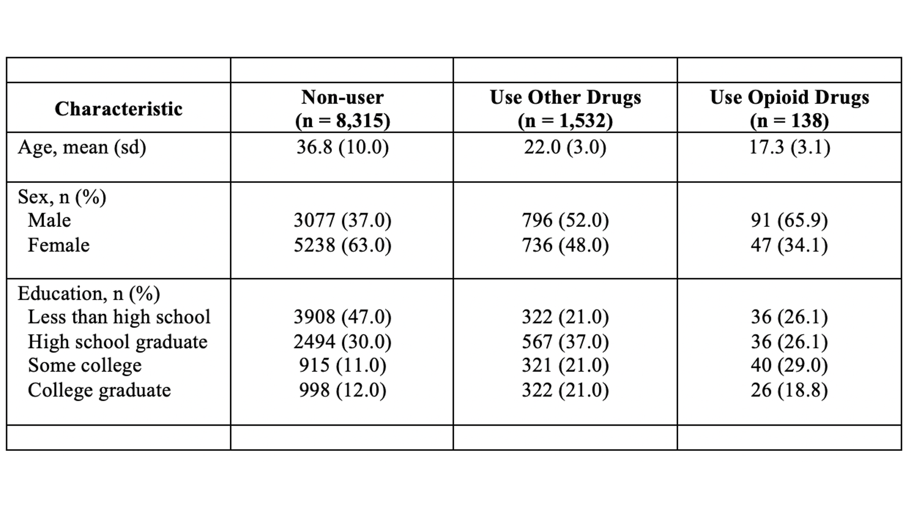
40.9 Fill in title
At this point in the process, we will typically go ahead and add the title to the first cell of our Word table. The title should always start with “Table #.” In our case, it will start with “Table 1.” In general, we use bold text for this part of the title. What comes next will change a little bit from table to table but is extremely important and worth putting some thought into.
Remember, all tables and figures need to be able to stand on their own. What does that mean? It means that if we pick up your report and flip straight to the table, we should be able to understand what it’s about and how to read it without reading any of the other text in your report. The title is a critical part of making a table stand on its own. In general, your title should tell the reader what the table contains (e.g., sociodemographic characteristics) and who the table is about (e.g., results of the Texas Opioid Study). We will usually also add the size of the sample of people included in the table (e.g., n = 9985) and the year the data was collected (e.g., 2020).
In different circumstances, more or less information may be needed. However, always ask yourself, “can this table stand on its own? Can most readers understand what’s going on in this table even if they didn’t read the full report?”
At this point, your table should look like this in Microsoft Word:
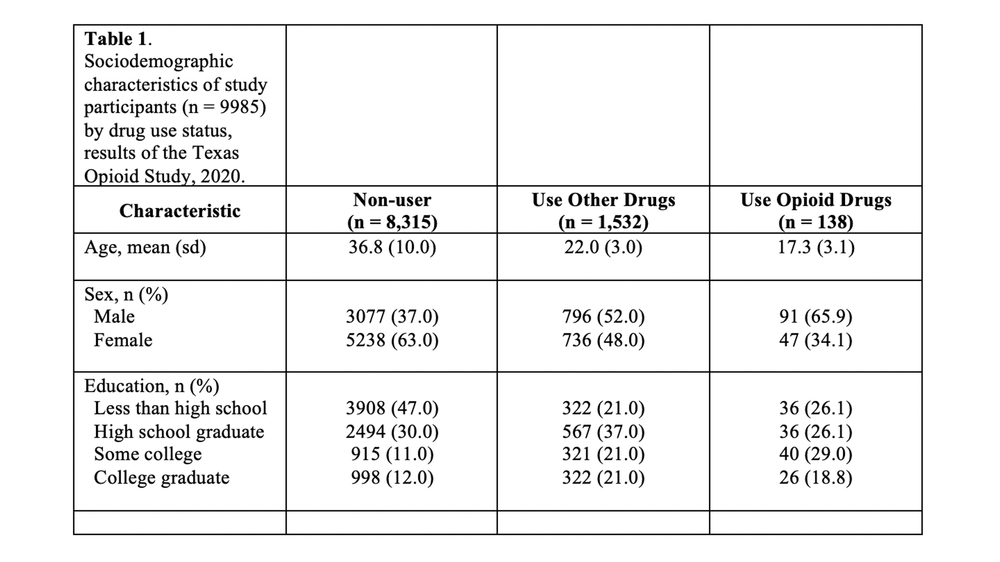
Don’t worry about your title being all bunched up in the corner. We will fix it soon.
40.10 Fill in footnotes
Footnotes are another tool we can use to help our table stand on its own. The footnotes give readers additional information that they may need to read and understand our table. Again, there are few hard and fast rules regarding what footnotes you should include, but we can give you some general categories of things to think about.
First, use footnotes to explain any abbreviations in your table that aren’t standard and broadly understood. These abbreviations are typically related to statistics used in the table (e.g., RR = risk ratio) and/or units of measure (e.g., mmHg = millimeters of mercury). Admittedly, there is some subjectivity associated with “standard and broadly understood.” In our example, we did not provide a footnote for “n”, “sd”, or “%” because most researchers would agree that these abbreviations are standard and broadly understood, but we typically do provide footnotes for statistics like “OR” (odds ratio) and “RR” (relative risk or risk ratio).
Additionally, we mentioned above that it is desirable, but sometimes challenging, to get your variable names and category labels to fit on a single line. Footnotes can sometimes help with this. In our example, instead of writing “Age in years, mean (sd)” as a row header we wrote “Age, mean (sd)” and added a footnote that tells the reader that age is measured in years. This may not be the best possible example, but hopefully you get the idea.
40.10.1 Formatting footnotes
When using footnotes, you need to somehow let the reader know which element in the table each footnote goes with. Sometimes, there will be guidelines that require you to use certain symbols (e.g., *, †, and ‡), but we typically use numbers to match table elements to footnotes when we can. In the example below, there is a superscript “1” immediately after the word “Age” that lets the reader know that footnote number 1 is adding additional information to this part of the table.
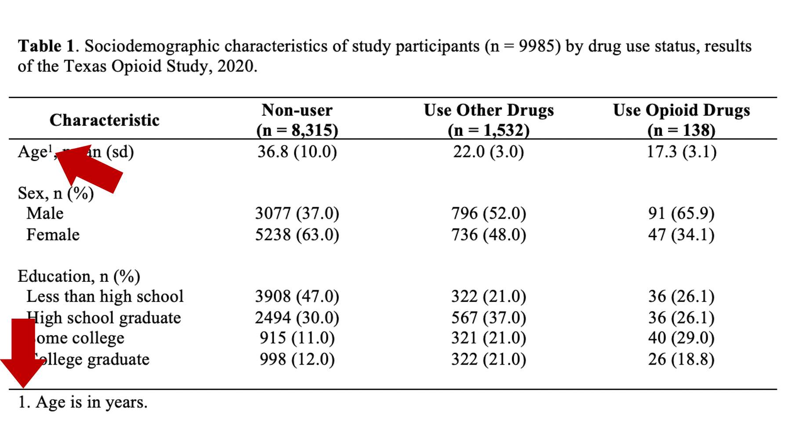
If you do use numbers to match table elements to footnotes, make sure you do so in the order people read [English], which is left to right and top to bottom. For example, the following would be inappropriate because the number 2 comes before the number 1 when reading from top to bottom:
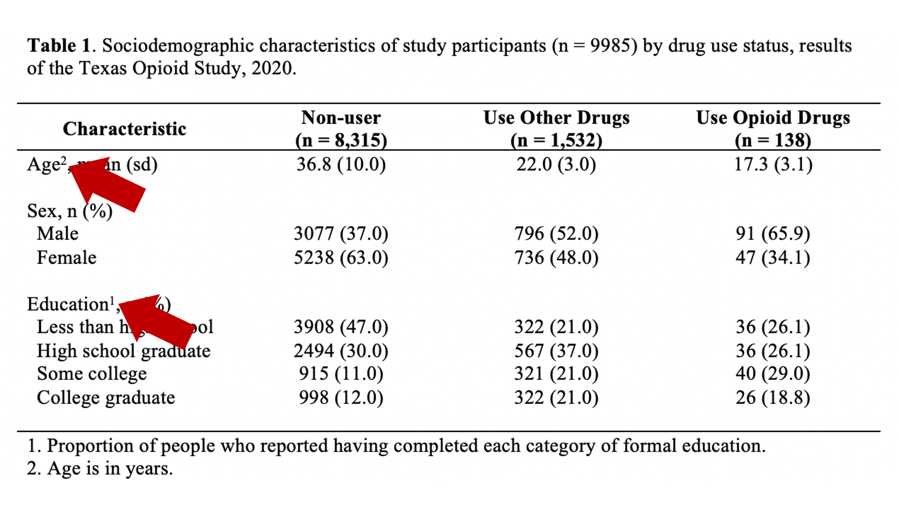
As another example, the following would be inappropriate because the number 2 comes before the number 1 when reading from left to right:
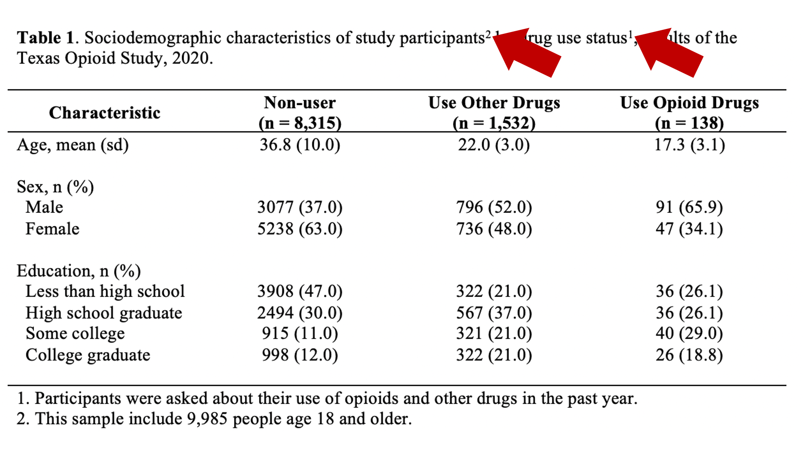
Additionally, when using numbers to match table elements to footnotes, it’s a good idea to superscript the numbers in the table. This makes it clear that the number is being used to identify a footnote rather than being part of the text or abbreviation. Formatting a number as a superscript is easy in Microsoft Word. Just highlight the number you want to format and click the superscript button.
At this point, your table should look like this in Microsoft Word:
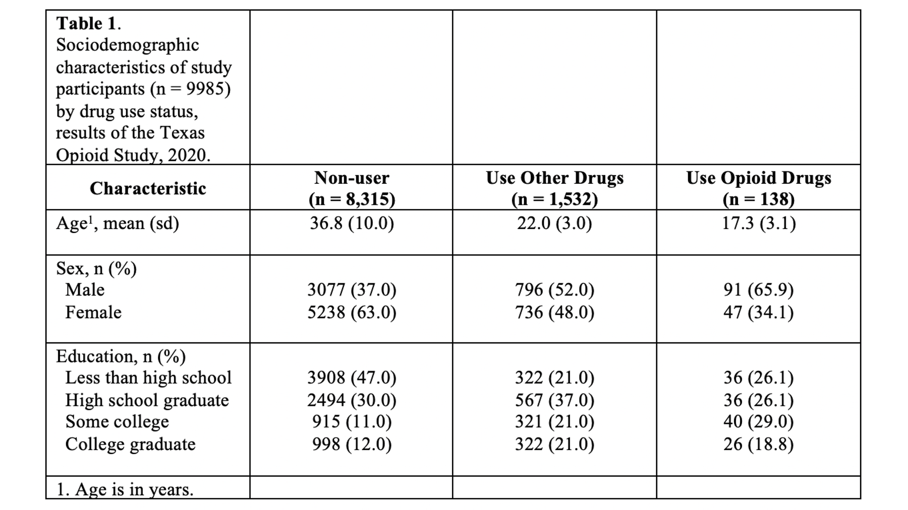
40.11 Final formatting
We have all of our data and explanatory text in our table. The last few remaining steps are just about formatting our table to make it as easy to read and digest as possible.
40.11.1 Adjust column widths
As I’ve already mentioned more than once, we don’t want our text carryover onto multiple lines whenever we can help it. In my experience, this occurs most often in the row headings. Therefore, we will often need to adjust (widen) the first column of our table. You can do that by clicking on the black border that separates the columns and moving your mouse left or right.
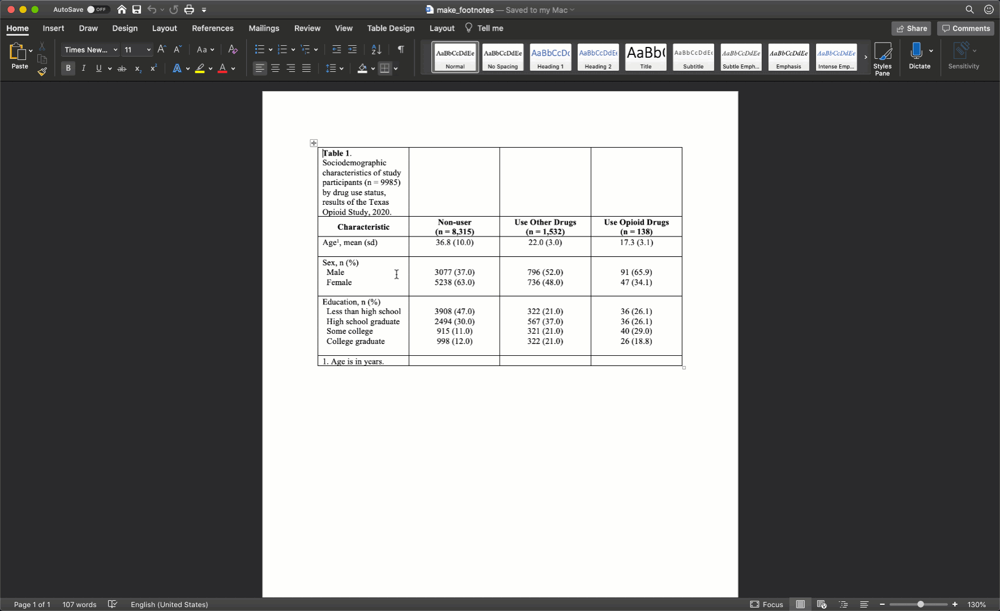
After you adjust the width of your first column, the widths of the remaining columns will likely be uneven. To distribute the remaining space in the table evenly among the remaining columns, first select the columns by clicking immediately above the first column you want to select and dragging your cursor across the remaining columns. Then, click the layout tab in the ribbon above your document and the Distribute Columns button.
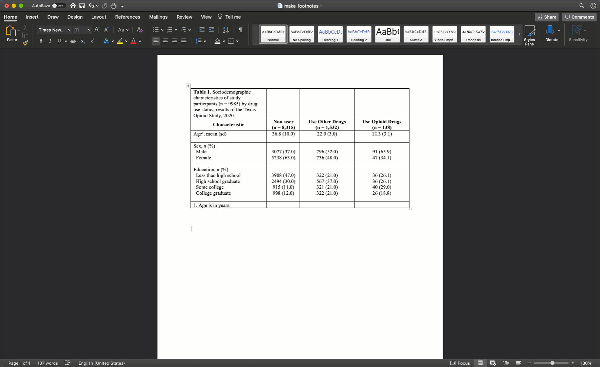
In our particular example, there was no need to adjust column widths because all of our text fit into the default widths.
40.11.2 Merge cells
Now, we can finally merge some cells so that our title and footnote spread the entire width of the table. We waited until now to merge cells because if we had done so earlier it would have made the previous step (i.e., adjusting column widths) more difficult.
To spread our title out across the entire width of the table, we just need to select all the cells in the first row, then right click and select merge cells.
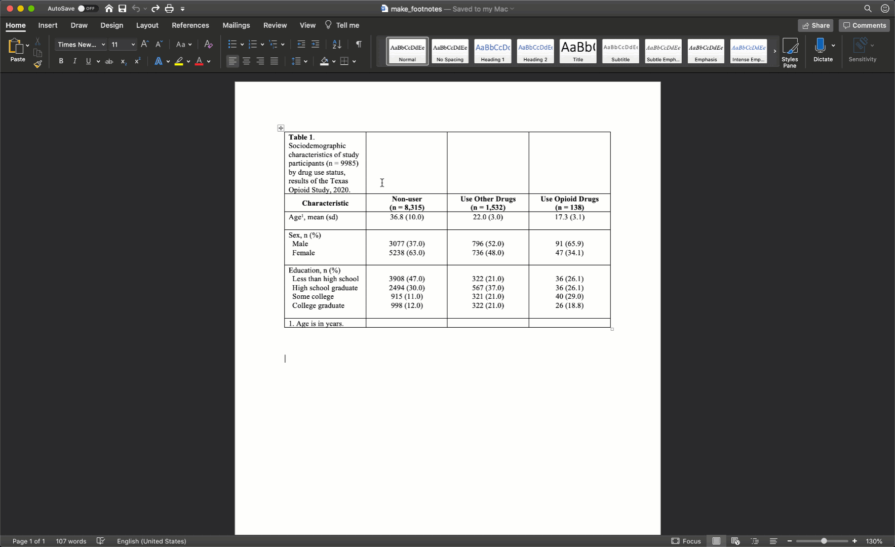
After merging the footnote cells in exactly the same way, your table should look like this:
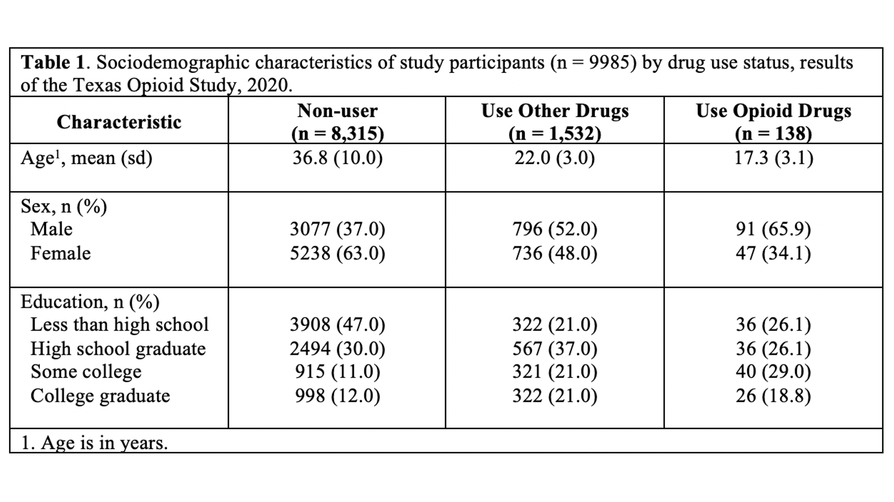
40.11.3 Remove cell borders
The final step is to clean up our borders. In my experience, students like to do all kinds of creative things with cell borders. However, when it comes to borders, keeping it simple is usually the best approach. Therefore, we will start by removing all borders in the table. We do so by clicking the little cross with arrowheads that pops up diagonal to the top-left corner of the table when you move your mouse over it. Clicking this button will highlight your entire table. Then, we will click the downward facing arrow next to the borders button in the ribbon above your document. Then, we will click the No Border option.
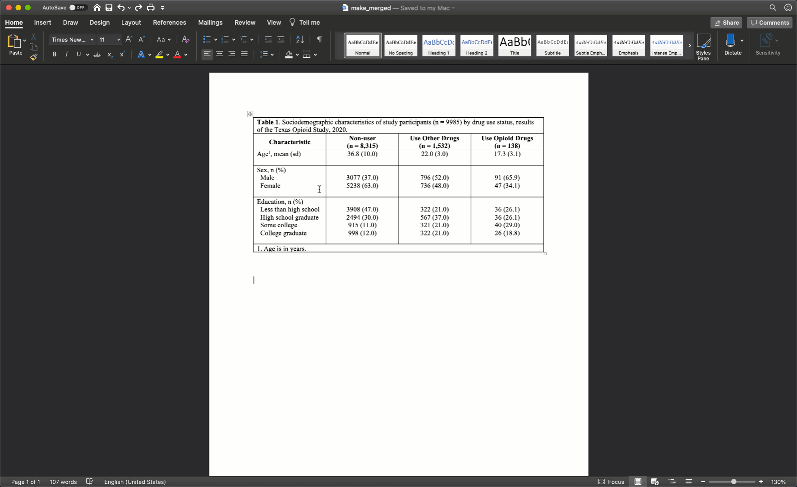
Our final step will be to add a single horizontal border under the title, a single horizontal border under the column header row, and a single horizontal border above the footnotes. We will add the borders by highlighting the correct rows and selecting the correct options for the same borders dropdown menu we used above.
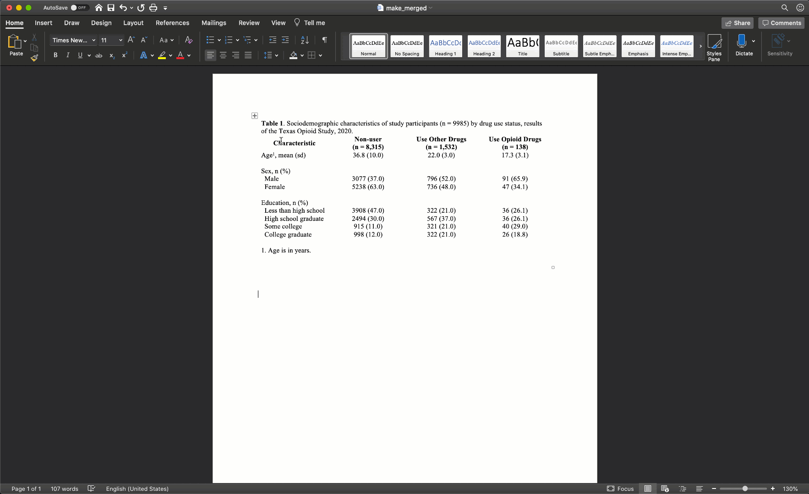
Notice that there are no vertical lines (borders) anywhere on our table. That should almost always be the case for your tables too.
40.12 Summary
Just like with guidelines we’ve discussed about R coding style; you don’t have to create tables in exactly the same way that we do. But, you should have a good reason for all the decisions you make leading up